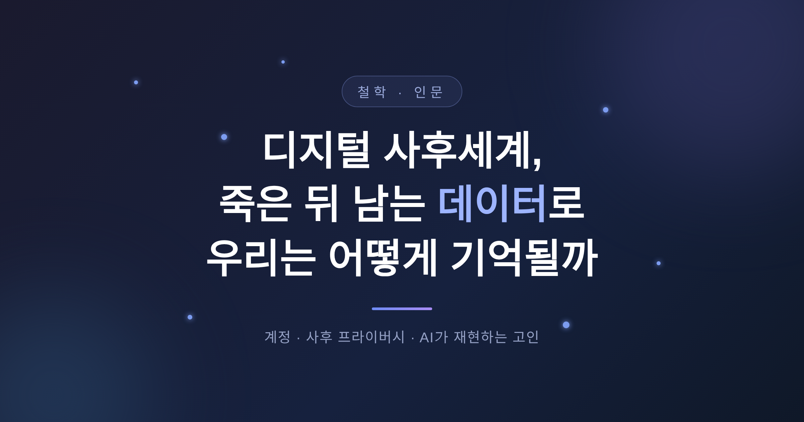
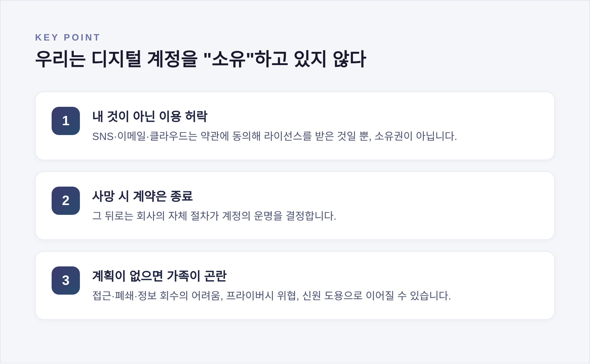
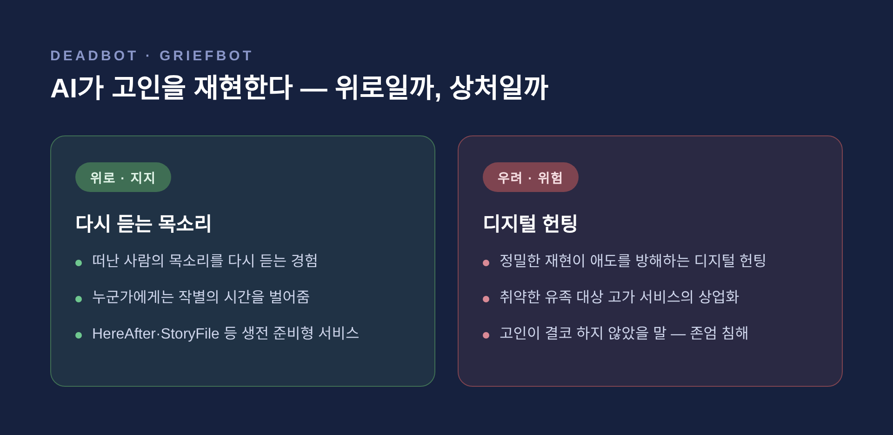

디지털 사후세계, 죽은 뒤에 남는 데이터로 우리는 어떻게 기억될까
죽음 이후에도 우리의 계정과 사진, 메시지는 인터넷에 그대로 남습니다.
이 글에서는 그렇게 남겨진 데이터, 곧 '디지털 유산'을 둘러싼 현실과 윤리, 그리고 그 안에 깃든 철학적 물음을 정리해 보겠습니다.
먼저 결론부터 말씀드리겠습니다. 우리가 죽은 뒤 디지털 흔적이 어떻게 다뤄질지는 대부분 미리 정해두지 않으면 통제할 수 없습니다. 계정의 소유권, 사후 프라이버시, AI로 고인을 재현하는 기술까지 — 모두 아직 답이 정해지지 않은 영역입니다.
■ 우리는 디지털 계정을 '소유'하고 있지 않다
흔히 오해하는 지점이 있습니다.
SNS, 이메일, 클라우드, 도메인. 이런 계정을 우리는 '내 것'이라 여깁니다.
하지만 엄밀히 보면 그렇지 않습니다.
가입할 때 동의한 약관을 통해 '이용 허락', 즉 라이선스를 받은 것일 뿐입니다.
사용자가 사망하면 계약은 종료됩니다. 그 뒤로는 회사의 자체 절차가 계정의 운명을 결정합니다.
이 차이가 중요합니다. 내 데이터처럼 보이지만, 처리 권한은 내게 온전히 있지 않은 셈입니다.
그래서 '디지털 유산 계획'이라는 개념이 등장했습니다. 사후 자신의 온라인 존재를 어떻게 관리하고, 넘기고, 닫을지 미리 준비하는 일입니다.
계획이 없으면 어떻게 될까요. 남겨진 가족과 유언집행자는 계정 접근이나 폐쇄, 중요한 정보의 회수에 큰 어려움을 겪습니다. 프라이버시 위협이나 신원 도용, 유족의 정서적 고통으로 이어질 수도 있습니다.

■ 플랫폼은 사후 계정을 어떻게 처리할까
다행히 주요 플랫폼은 사후 처리 기능을 갖추고 있습니다. 아래는 2024~2025년 기준입니다.
| 플랫폼 | 기능 | 핵심 내용 |
|---|---|---|
| 추모 계정 / 레거시 컨택트 | 이름 위에 'Remembering(기억하며)' 표시. 생전에 지정한 사람이 프로필을 제한적으로 관리 | |
| 추모 계정 | 'Remembering' 표시. 단, 레거시 컨택트 지정은 불가 | |
| Apple | 레거시 컨택트 | 신뢰할 사람을 지정해 사후 데이터 접근. 접근 기간은 3년 |
| 비활성 계정 관리자 | 3~18개월 비활성 시 최대 10명에게 데이터 전달 |
조금 더 들여다보겠습니다.
Facebook 레거시 컨택트는 생각보다 권한이 제한적입니다.
추모식 안내를 새로 올리거나 프로필 사진을 바꾸는 일은 됩니다. 하지만 계정 로그인, 메시지 열람, 친구 삭제는 되지 않습니다.
고인의 사생활을 지키기 위한 선이라 볼 수 있습니다.
Apple의 경우 한계가 분명합니다. DRM으로 보호된 음악·영화, 비밀번호 관리자에 저장된 암호 같은 일부 데이터는 이전되지 않습니다. 접근 권한도 3년이 지나면 사라지고, 이후 Apple이 계정을 삭제합니다.
추모 계정을 요청하려면 절차가 따릅니다. 계정 링크, 본인 이메일, 그리고 부고나 사망진단서 같은 사망 증빙을 제출해야 합니다.
여기서 짚어둘 점이 있습니다. 이런 정책의 수치와 조건은 언제든 바뀔 수 있습니다. 직접 설정하기 전에 각 플랫폼의 최신 안내를 확인하시길 권합니다.
■ AI가 고인을 되살린다 — 데드봇과 그리프봇
가장 논쟁적인 영역으로 넘어가 보겠습니다.
'데드봇' 또는 '그리프봇'이라 불리는 기술이 있습니다.
고인이 남긴 문자, 영상, 음성, 사진, SNS 게시물을 학습해 고인의 관점에서 대화하는 AI입니다.
이 분야는 '디지털 사후세계 산업(Digital Afterlife Industry)'이라는 학술 용어로 불릴 만큼 하나의 산업으로 자리 잡았습니다.
실제 사례를 보겠습니다.
HereAfter AI는 본인이 살아있는 동안 직접 챗봇을 준비하는 방식입니다. 앱이 사용자를 인터뷰하며 수백 개의 질문으로 생각을 모읍니다.
StoryFile은 녹화된 영상 인터뷰로 사실적인 아바타를 만듭니다. 영국에서는 87세 여성이 생전에 녹화한 영상과 음성을 바탕으로, 대화형 AI와 홀로그램을 통해 '자신의 장례식에 참석'한 사례가 보도되기도 했습니다.
Replika처럼 본래 추모 목적이 아니었던 서비스를, 이용자들이 고인의 메시지를 입력해 개인적 그리프봇으로 바꿔 쓰는 경우도 있습니다.

■ 위로일까, 상처일까 — 그리프봇을 둘러싼 윤리
이 기술을 어떻게 봐야 할지는 의견이 갈립니다. 양쪽을 모두 살펴보겠습니다.
지지하는 쪽은 위안을 말합니다. 떠난 사람의 목소리를 다시 듣는 일이 누군가에게는 작별의 시간을 벌어준다는 것입니다.
반대편의 우려는 더 구체적입니다.
케임브리지대 연구진은 지나치게 정밀한 AI 재현이 유족에게 원치 않는 '디지털 헌팅(digital haunting)'을 불러올 수 있다고 경고했습니다. 떠난 이가 자꾸 되돌아오는 듯한 감각이 애도를 방해하고 큰 고통을 줄 수 있다는 것입니다.
정서적으로 취약한 유족이 위안을 내세운 고가의 서비스에 휘말릴 위험도 지적됩니다. 슬픔을 이용해 이익을 취하는 일로 비칠 여지가 있습니다.
동의의 문제도 남습니다. 타인의 데이터로 그리프봇을 만드는 일을 막는 명확한 규정이 아직 부족합니다. 데드봇을 만들기 전에 본인의 생전 동의, 적어도 유족의 허가가 있어야 한다는 주장이 나오는 이유입니다.
존엄의 문제는 더 미묘합니다.
AI는 본질적으로 새로운 답을 만들어냅니다. 그래서 봇은 고인이 결코 하지 않았을 말을 하게 됩니다. 이는 고인의 진실을 침해하는 것으로 볼 수 있습니다.
AI 윤리학자 팀닛 게브루는 한 마디로 압축했습니다. "누군가의 죽음을 구독 서비스로 바꾸는 일은 고통을 상품화할 위험이 있다."
■ 잊혀질 권리와 기억될 권리, 그 사이에서
법과 제도는 이 흐름을 따라잡고 있을까요.
먼저 알아둘 점이 있습니다. 유럽의 개인정보보호법인 GDPR은 '살아있는 자연인'에게만 적용됩니다. 원칙적으로 사망자의 개인정보에는 미치지 않습니다.
다만 빈틈을 메우는 움직임이 있습니다.
프랑스, 이탈리아, 스페인 등 여러 EU 회원국이 국내법으로 사후 데이터 보호 규정을 두었습니다. 예컨대 이탈리아는 GDPR의 규칙을 사망자에게도 확대해, 보호받을 가족적 사유가 있는 사람이 고인의 데이터 권리를 행사할 수 있게 했습니다.
그래서 두 진술이 함께 성립합니다. "사망자에게는 권리가 없다"와 "국가별로는 보호된다"가 동시에 참인 상황입니다.
이 지점에서 두 권리가 마주칩니다.
하나는 '잊혀질 권리'입니다. 사후에도 불필요한 데이터를 지워달라 요구할 수 있어야 한다는 입장입니다.
다른 하나는 '기억될 권리'입니다. 왜곡되지 않은 역사를 온전히 보존하자는 집단적 권리입니다. GDPR도 표현의 자유와 역사 연구를 위한 삭제 예외를 인정합니다.
한쪽은 지우자 하고, 다른 쪽은 남기자 합니다. 한 사람의 데이터 안에서 두 요구가 부딪힙니다.
■ 두 번째 죽음, 그리고 우리가 기억되는 방식
마지막으로 철학적 물음에 이르겠습니다.
오래된 통념이 있습니다. 사람은 두 번 죽는다는 이야기입니다.
한 번은 생물학적 죽음입니다. 또 한 번은 우리를 마지막으로 기억하던 사람이 사라질 때 찾아오는 '두 번째 죽음'입니다.
디지털 흔적은 이 두 번째 죽음을 무한히 미룰 수 있습니다. 그것이 축복인지 굴레인지는 아직 답하기 어렵습니다.
여기서 분명히 해둘 것이 있습니다. '의식 업로드'나 '디지털 불멸'은 현재 실현된 기술이 아닙니다. 가설이자 사고실험일 뿐, 실제로 의식을 옮길 수 있다는 근거는 확인되지 않았습니다.
그럼에도 질문은 무겁습니다.
디지털 버전의 '나'가 정말 나를 잇는 것일까요, 아니면 그저 흉내 내는 것일까요. 철학자들은 그런 지속이 개인의 정체성과 이어지는지, 아니면 단지 유산과 표상에 머무는지를 묻습니다.
죽음 자체가 삶에 의미를 준다는 시각도 있습니다. 하이데거는 유한성이 우리 행위에 긴급함과 의미를 부여한다고 보았습니다. 끝이 없다면 삶은 단조로움으로 흘러내릴지 모릅니다.
한편 죽어가는 사람이 자신의 디지털 유산을 정리하는 일은, 자기 삶의 서사를 되돌아보고 어떻게 기억될지 스스로 빚는 실천이기도 합니다. 그렇게 얻는 자기 연속성은 존엄한 죽음의 한 조각이라 할 만합니다.
결국 남는 것은 하나의 물음입니다.
기억과 시뮬레이션의 경계가 얇아질 때, 우리는 무엇을 남기고 무엇을 지울지 스스로 정해야 합니다.
"우리는 데이터로 기억될 수 있지만, 데이터가 곧 우리는 아닙니다."
오늘 단 하나라도 정해두고 싶으시다면, 가장 먼저 닫고 싶은 계정 하나부터 떠올려 보시면 좋겠습니다.